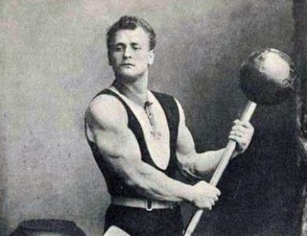

Fisiculturismo é a busca por um físico perfeito. Além de medir o condicionamento físico e volume muscular, visa também a beleza estética do mesmo, a partir da hipertrofia muscular, ou seja, aumento no volume da massa muscular. Ganha o físico que melhor apresenta simetria, volume e condicionamento, se assemelhando muito em seu início com uma estátua grega.
O primeiro relato sobre fisiculturismo e halterofilismo vem da Grécia. Onde lá havia um homem chamado Milon de Crótona, um atleta olímpico invejado por sua força, volume muscular e saúde implacável.
O treino de Milon era resumido em colocar um bezerro nas costas e andar. À medida que este animal ia crescendo, seu corpo ia acompanhando as adaptações necessárias para continuar andando com o mesmo nas costas. Assim, ele aplicou uma lei da musculação conhecida como “princípio da sobrecarga”, onde se aumenta os pesos aos poucos de forma a promover evolução fisiológica e alcançar os objetivos propostos.
A primeira competição

*Eugene Sandow, criador do Fisiculturismo
A primeira competição oficial de fisiculturismo ocorreu em 14 de setembro de 1901, em Londres, Inglaterra. Possivelmente existiram outros campeonatos, mas este foi o que apresentou um registro oficial. Essa competição foi intitulada de “The Great Competition” e foi idealizada e realizada por Eugene Sandow, com o objetivo de escolher o físico mais próximo dos critérios estabelecidos. O evento levou três anos para ser planejado e teve a participação de 156 atletas. O evento foi realizado no Royal Albert Hall e competiram militares, carteiros, auxiliares de trabalhos braçais e atletas diversos. O vencedor foi Willian Murray, de Nottingham. Em segundo lugar ficou D.Cooper de Birmingham e em terceiro, A.C.Smyth de Middlesex. Foi registrada a presença de 15.000 pessoas nas finais.
O prêmio para este campeonato foi uma estátua de Eugene Sandow banhada em ouro, segurando uma barra com pesos de bola, a mesma que é usada até hoje para premiar o maior campeonato de fisiculturismo do mundo, o Mr. Olympia. Essa estátua foi idealizada pelo escultor William Pomeroy em 1891. O segundo colocado recebeu a mesma estatueta em prata e o terceiro em bronze.